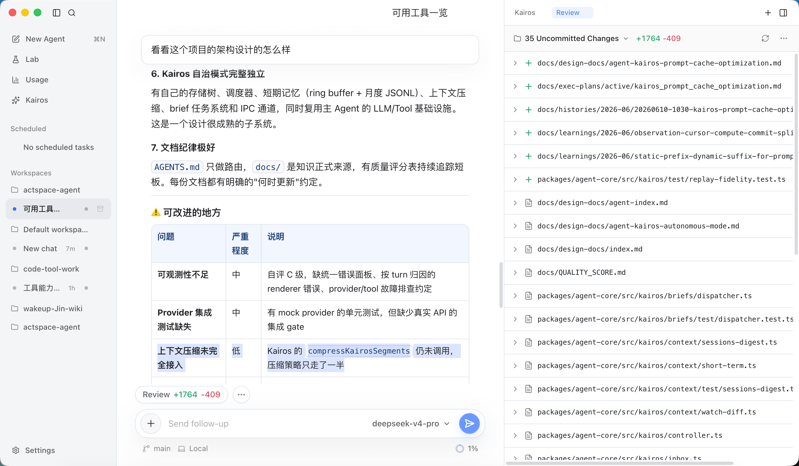
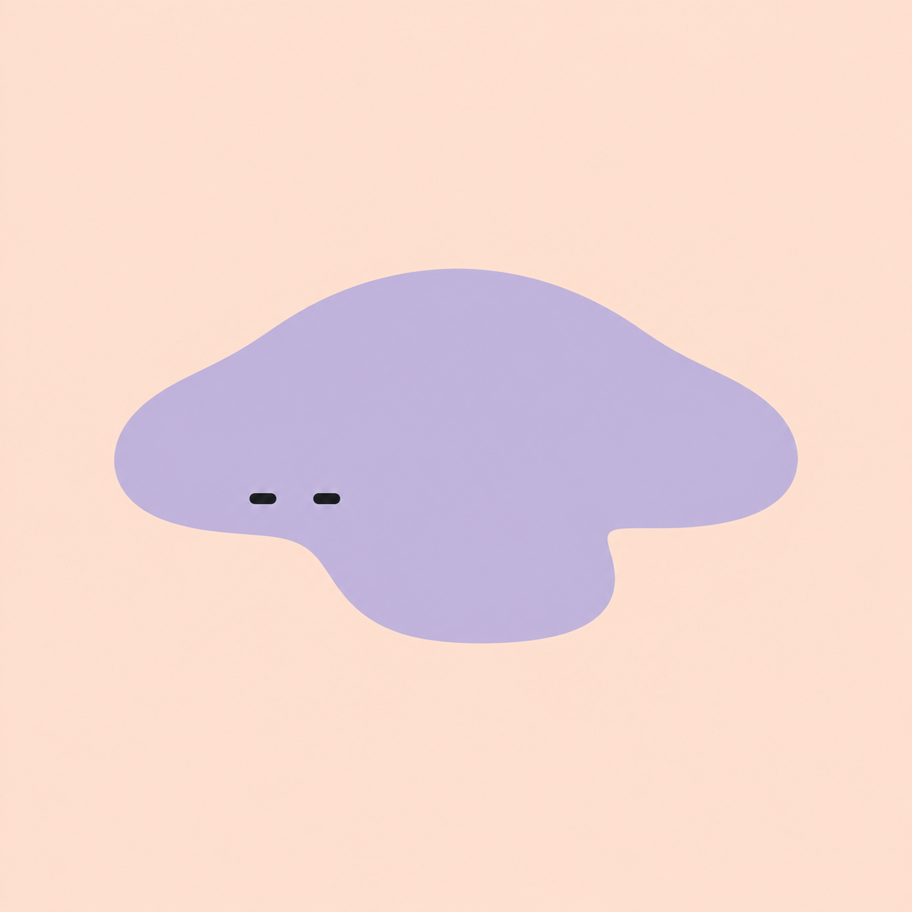

给模型一个
真正能行动的空间
① 标题重点词用品牌紫；“空间”两个字不再被拆到两行。字体换成苹方 + SF，中英文粗细一致。

③ 首图换成真实任务（架构分析 + Review），不再是“代码格式测试”。外框从灰色改成浅紫底，去掉“框中框”；截图贴底出血，像从页面里长出来。
从一个任务，
到一份看得见的结果。
打开工作区，把任务交给 Agent。理解资料、调用工具、检查改动，在同一个空间里，把工作向前推进。
④ 展示区：六张图统一放进 16:10 的浅灰底板，细长的 Skills 图也不再留大片空白；图片在视口里居中，下方进度条告诉你看到第几项；非当前段只淡化正文，标题保持可读；每段高度从 72vh 降到 58vh，少滚一屏多。
上下文
看清模型正在使用的上下文
让每一次回答都有可检查的依据。打开当前请求，了解模型看到了什么，以及哪些信息占用了空间。
- 按系统、工具与消息查看内容
- 区分当前上下文和累计 Token
- 长任务中按需压缩，保留原始记录
工具执行
从读取项目，到修改与验证
把目标交给 Agent，在同一个会话里跟进文件读取、修改和命令执行，直到拿到可检查的结果。
- 读取与检索工作区文件
- 查看文件生成进度与实际改动
- 检查命令输出，在需要时批准操作
Review
每一处改动，都可以审阅
对话旁就是实际的文件差异。先看清 Agent 做了什么，再决定哪些改动值得保留。
- 切换本轮、未提交与分支等范围
- 逐文件检查增加和删除
- 在工作台中完成后续 Git 操作
Skills
把常用方法带进下一项任务
把可复用的工作方法放进 Skill。选好项目、任务和 Skill，让熟悉的流程继续发挥作用。
- 在扩展页安装与管理 Skills
- 在输入框选用适合任务的方法
- 结合项目规则，保持工作约定一致
子 Agent
把资料检索交给子 Agent
把需要独立探索的问题拆出去。主会话保留任务全貌，右侧随时查看子任务的活动与发现。
- 只读地读取文件与搜索项目
- 跟进正在读取、搜索和整理的状态
- 打开独立详情，检查结果和失败原因
会话轨迹
回到每一次请求与工具调用
从聊天切换到 Trajectory，沿时间线检查执行记录。遇到问题时，找到对应的请求、参数与结果。
- 搜索并定位会话中的执行记录
- 检查工具参数和返回结果
- 保留聊天草稿，随时切回任务
让日常工作，顺手一些。
⑤ 八项能力改成轻卡片：白底细边，悬停时边框变紫、箭头右移。标题 16px，和上面的大标题拉开层级。
⑥ 更新条加上紫色标签和日期，整条可点。
